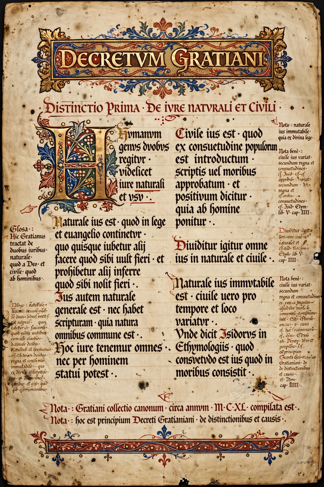

Wikipedia > Gratian
Gratian

Gratian (Latin: Gratianus; fl. twelfth century) was an Italian legal scholar from Bologna, traditionally regarded as the father of canon law as an academic discipline. His work, the Decretum Gratiani (c. 1140), a systematic collection and harmonisation of Church law, became the foundational textbook of canon law for centuries.
Life
Very little is known with certainty about Gratian's life. Tradition describes him as a monk — sometimes identified as a Camaldolese — teaching at the monastery of St Felix in Bologna, and older accounts gave him a birthplace at Chiusi and dates in the eleventh and twelfth centuries. Modern scholarship treats most biographical details, including whether there was a single author, with caution; research on the earliest manuscripts suggests the Decretum may have been produced in stages and possibly completed by more than one hand.
The Decretum
The work's full title is Concordia discordantium canonum — "a harmony of conflicting canons". Gratian assembled roughly 3,800 texts: canons of councils, papal decretals, writings of the Church Fathers, and excerpts of Roman and Frankish law, and interleaved them with his own commentary (the dicta Gratiani), in which he set out legal principles and resolved apparent contradictions between authorities. This dialectical method, comparable to that of Peter Abelard's Sic et Non, transformed canon law from a jumble of collections into a coherent system taught in universities.
Influence
The Decretum became the first part of the Corpus Juris Canonici, the body of law governing the Roman Catholic Church until the Code of Canon Law of 1917. Generations of canonists, the "decretists", lectured on it at Bologna and elsewhere. Its distinctions — on the sources of law, the power of the pope, marriage, procedure and penance — shaped Western legal thought well beyond the Church, and historians credit it with a role in the broader twelfth-century revival of jurisprudence that also produced the renewed study of Roman civil law. The Decretum remains a principal source for the legal world in which ecclesiastical courts operated.
See also: Canon law · Decretum Gratiani · Ecclesiastical court · University of Bologna